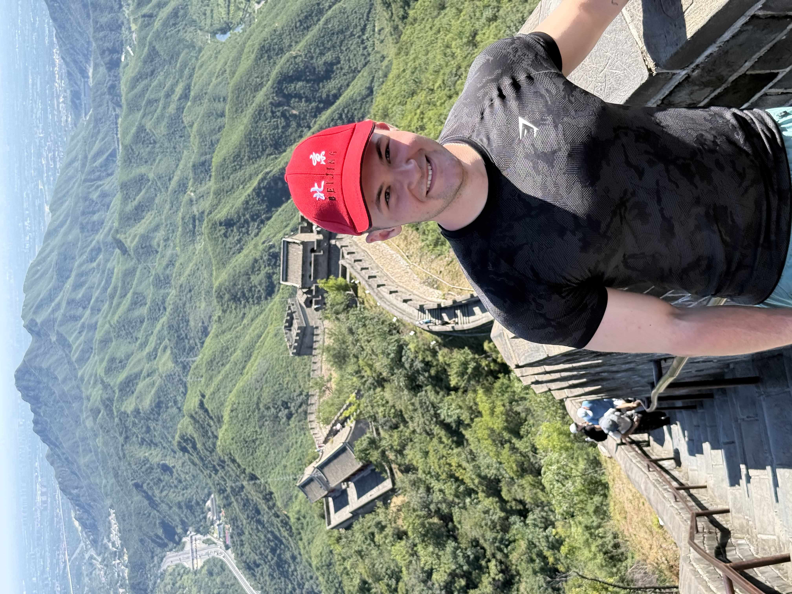

I have a tattoo of the Universal Coefficient Theorem (for cohomology) from algebraic topology. Very roughly, it's a result that tells you how different kinds of information about a space fit together.
For me, it's a reminder that complicated things often decompose into simpler pieces in maths and in life. It also makes for fun conversations when someone asks, "Wait... is that maths on your arm?"

I compete in powerlifting, which means I train the squat, bench press and deadlift with the goal of lifting as much weight as I can on the platform. I love it because progress is brutally honest: either the bar moves or it doesn't.
Training has been a big lesson in consistency, patience, and working with the body I have on any given day. It's also a really nice counterbalance to long stretches of thinking at a whiteboard.
Powerlifting has also taught me a lot about adapting training around fatigue, health, and real life; it's one of the ways I look after both my body and brain.

Whenever I get the chance to step away from the whiteboard and the gym, I love to travel. Exploring new places gives me a fresh perspective and is a great way to reset before diving back into research.
One of my recent highlights was visiting the Great Wall of China. There's nothing quite like experiencing historical scale in person to make you appreciate the world.